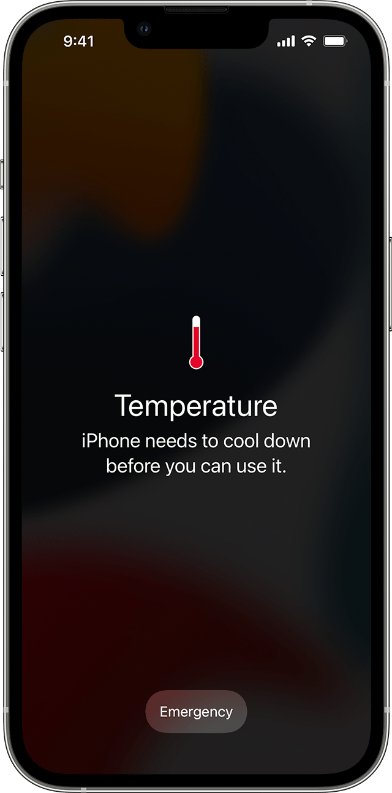
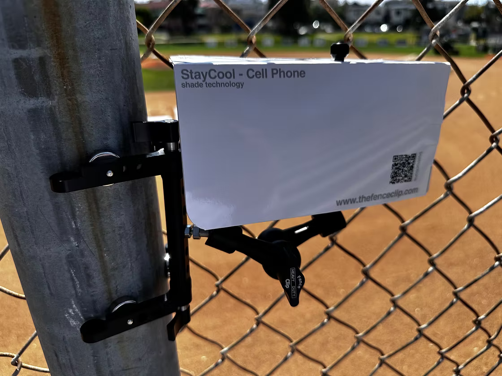

Recording video, running the camera, and keeping the screen bright all add heat. Add direct sun and a hot field, and the phone has less opportunity to get rid of it. I’ve found that a hot phone can slow down and become less dependable when I’m trying to save a clip. That’s frustrating when something worth keeping just happened.
If an iPhone gets too hot, it can dim its display, pause charging, close apps, or show a temperature warning. While that warning is on screen, you may not be able to use the phone normally.

Keep the camera ready without leaving the phone in the sun
Having the camera and display active adds to the phone’s work and heat. On a very hot day, I try to be deliberate about when I’m actively recording. At a baseball game, for example, I might bring the phone out for an at-bat involving one of my players, then lock it and put it in a shaded pocket between moments I want to capture.
That gives the phone a break from the active screen and direct sun. It also keeps me from holding a hot phone in the open for every minute of the game.
Turn the brightness down
The display is another source of heat, and full brightness can add to the load on a sunny day. Lowering brightness is an easy step as long as you can still see well enough to frame the play and use the controls.
Brightness is only part of the problem. A phone sitting in direct sunlight can heat up even when the display is dim or off. Shade is the bigger win.
Make a little shade for the phone
I’ve used a simple paper or thin-cardboard shade around the phone. It can block direct sunlight while leaving room for air to move around the device. Keep the camera lens and any microphones you need clear, and angle the shade around the phone instead of covering it.
I also like the FenceClip Paper Shade for Cell Phone, which I found on the same site as my fence clip. A small clip-on umbrella can be another option, depending on the fence setup and the direction of the sun. Whatever shade you use, check that it does not block the camera, trap heat against the phone, or make the mount unstable.

Give a hot phone a break between plays
If the phone is getting hot, put it away in a shaded place for a while. Removing the case can also help heat escape more easily, especially if the case is thick or insulating. On the hottest days, I sometimes take my case off before the game and leave it off while I’m recording.
I also bring a clean, cool, well-wrung-out damp cloth. I use it to wipe down the phone and, when it is very hot, loosely wrap the phone in the cloth for five or ten minutes while it rests between recordings. The cloth should be damp, not dripping wet. iPhone water resistance varies by model and can decrease with wear, so keep moisture away from openings and do not charge or connect the phone until it is completely dry. Check Apple’s handling guidance for your iPhone before trying this.
Try a cooling puck—or bring a second phone
A phone cooling puck is another option to consider if you record often in hot weather. Test it with your phone and mount before relying on it during a game, follow the accessory’s instructions, and stop if you see moisture or condensation. Keep the camera and openings clear, and remember that active cooling does not replace shade or breaks.
You can also bring two phones and alternate between them. If one needs a few minutes in the shade to cool down, keep the other ready in a cool, shaded place. It is extra gear to carry, but it can be a practical backup for a long tournament day.
If the temperature warning appears
Stop recording and move the phone to a cooler place out of direct sunlight. Follow the on-screen guidance and give it time to cool before using it again. Avoid trying to force the phone back into service while it is showing a temperature warning.
Keeping your phone shaded, lowering screen brightness, taking breaks, and removing an insulating case can all help on a hot day. The goal is simple: give the phone a better chance to stay cool enough to capture the play when it matters.
For a dedicated shade and more game-day gear ideas, see the Sideline Save equipment guide. Apple’s advice is to move an overheated device out of direct sunlight and let it cool before using it again: If your iPhone or iPad gets too hot or too cold.